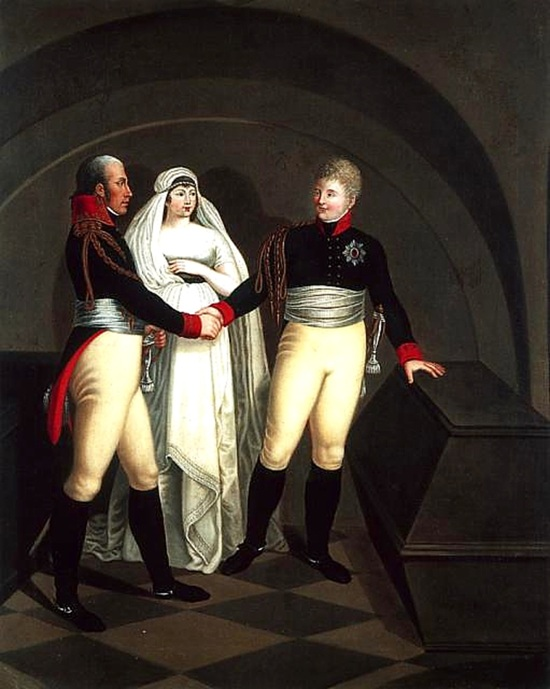
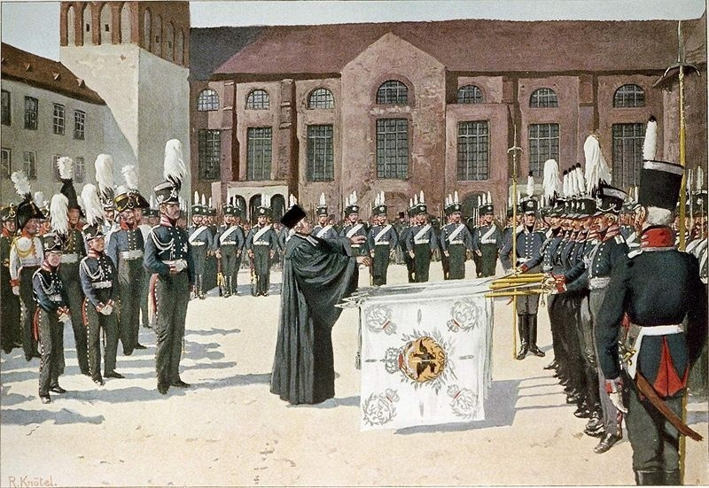
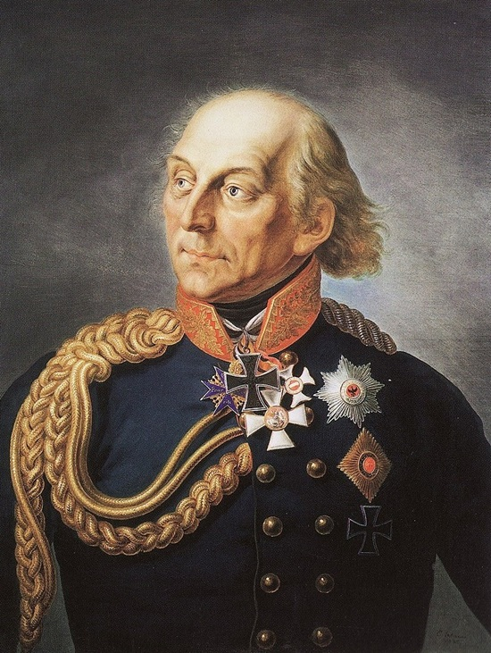
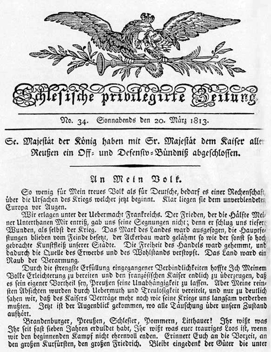
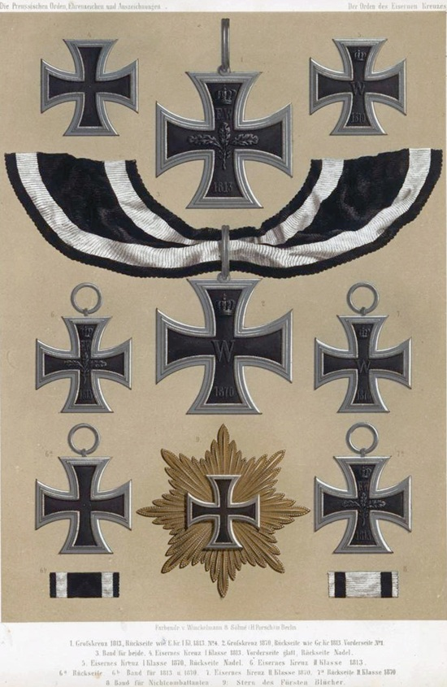
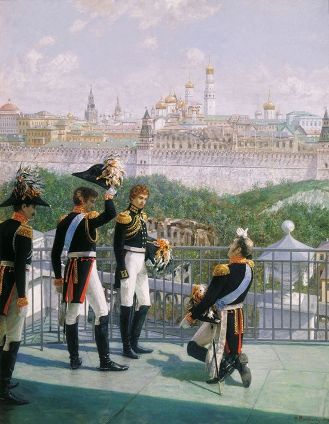

Союз России и Пруссии - «Братство по оружию»
Автор статьи: Максим Вахминцев
Опубликовано: 28 мая 2024
Опубликовано: 28 мая 2024
Статья в группе ВК Историческая империя: https://clck.ru/3M5LoE
В XVIII веке отношения России и Пруссии имели противоречивый характер. Петр Великий и Фридрих Вильгельм I находились в дружеских отношениях, были очень похожи друг на друга как в личностном, так и в политическом планах. Оба правили как абсолютные монархи, контролировали все стороны жизни государства. После Семилетней войны отношения между Россией и Пруссией вновь стали налаживаться. Разделы Речи Посполитой и необходимость борьбы с революционной Францией заставляли Берлин и Петербург идти на взаимное сближение, несмотря на возражение части русской и прусской политической элиты.
В XVIII веке отношения России и Пруссии имели противоречивый характер. Петр Великий и Фридрих Вильгельм I находились в дружеских отношениях, были очень похожи друг на друга как в личностном, так и в политическом планах. Оба правили как абсолютные монархи, контролировали все стороны жизни государства. После Семилетней войны отношения между Россией и Пруссией вновь стали налаживаться. Разделы Речи Посполитой и необходимость борьбы с революционной Францией заставляли Берлин и Петербург идти на взаимное сближение, несмотря на возражение части русской и прусской политической элиты.
Петр III и Павел I были большими поклонниками Фридриха Великого, восхищались дисциплиной прусской армии и считали образцовой прусскую систему государственного управления с ее ориентиром на контроль и экономию. Военные в России и Пруссии занимали важные административные посты, чиновники со временем стали носить военную форму.
Церковь играла важную роль в формировании государственной идеологии, укреплении верности монарху, стране и правящей династии. И в России, и в Пруссии церковь была подчинена интересам государства, являлась важнейшим инструментом политической пропаганды. В России со временем становились популярны девизы «С нами Богъ!», «За Веру, Царя и Отечество!». В Пруссии же широко использовались девизы «Gott mit uns!» и «Mit Gott für König und Vaterland!». Обе державы считали себя важнейшими религиозными центрами – Россия была оплотом православия, а Пруссия оплотом лютеранства.

{kind=link}
Александр I, королева Пруссии Луиза и король Фридрих Вильгельм III возле могилы Фридриха Великого
Борьба с Наполеоном серьезно сблизила идеологически консерваторов России и Пруссии. После победы над Францией обе державы отказались от популярной в XVIII веке моды на французскую культуру и французский язык. Отказ от следования идеалам «просвещенного абсолютизма», идеям французских Просветителей произошел в России с казнью короля Людовика XVI в 1793 году; Пруссия же стала устанавливать реакционно-консервативный режим с кончиной короля Фридриха Великого в 1786 году. В России уже при Николае I использовалась знаменитая триада Уварова: «Православие, самодержавие, народность». Прусские же консерваторы постепенно стали рассматривать свою страну как центр будущего объединения Германии, которое в 1860-х годах возглавил Отто фон Бисмарк.
Как отмечает российский историк Д. В. Стерхов, после поражения прусской армии при Йене и Ауэрштедте в октябре 1806 года лютеранские и кальвинистские священники Пруссии взывали к патриотизму соотечественников, причиной поражения называли духовное оскудение народа. Нашествие Наполеона считалось наказанием за грехи немцев, к которым относили, в том числе, увлечение идеями французских Просветителей. Церковь призывала жертвовать средства на помощь раненым воинам, вдовам и сиротам, на борьбу с врагом, благословляла добровольцев, вступавших в ландвер – немецкий аналог народного ополчения.

Как отмечает российский историк Д. В. Стерхов, после поражения прусской армии при Йене и Ауэрштедте в октябре 1806 года лютеранские и кальвинистские священники Пруссии взывали к патриотизму соотечественников, причиной поражения называли духовное оскудение народа. Нашествие Наполеона считалось наказанием за грехи немцев, к которым относили, в том числе, увлечение идеями французских Просветителей. Церковь призывала жертвовать средства на помощь раненым воинам, вдовам и сиротам, на борьбу с врагом, благословляла добровольцев, вступавших в ландвер – немецкий аналог народного ополчения.
{kind=link}
Рихард Кнетель. Освящение прусских полковых знамен.
В России Наполеон также изображался антихристом и тираном, православное духовенство молилось за победу русского оружия. Многие прусские военные деятели поступали на службу в Русскую императорскую армию. Однако Пруссия, в отличие от России, оказалась полностью оккупирована французами, что заставило ее военных и политических деятелей (Штейн, Гарденберг, Шарнхорст, Гумбольдт) начать процесс всесторонних преобразований государственного устройства Пруссии.
На встрече в Тильзите в 1807 году Наполеон, в качестве уступки российскому императору Александру, гарантировал независимость Пруссии, но при этом отторгнул ее польские территории, приобретенные по итогам Второго и Третьего разделов Речи Посполитой в 1793 и 1795 гг., в пользу Герцогства Варшавского.
Последнее воспринималось Наполеоном в качестве важнейшего форпоста его политики в Восточной Европе и инструмента для воздействия одновременно на Россию, Пруссию и Австрию. После поражения в войне 1812 года император дал понять, что скорее примет вариант раздела земель герцогства между Пруссией и Австрией, но никогда не согласится с вхождением Польши в состав России, на чем настаивал Александр I.
То обстоятельство, что Пруссия не спешила присоединяться к антифранцузскому альянсу, объяснялось не только противоречиями с Петербургом по польскому вопросу. Фридриха Вильгельма беспокоила возможная жёсткая реакция со стороны Парижа, а Пруссия, чья экономика едва подавала признаки жизни после иностранной оккупации, не была готова финансировать новую войну.
Опасаясь в равной степени как французского, так и русского влияния, Фридрих Вильгельм воспринимал Австрию как союзника Пруссии в польском вопросе - Вена не предъявляла к Берлину никаких территориальных претензий, лишь твёрдо заявляя о невозможности существования независимой Польши, что было выгодно и Пруссии.
На встрече в Тильзите в 1807 году Наполеон, в качестве уступки российскому императору Александру, гарантировал независимость Пруссии, но при этом отторгнул ее польские территории, приобретенные по итогам Второго и Третьего разделов Речи Посполитой в 1793 и 1795 гг., в пользу Герцогства Варшавского.
Последнее воспринималось Наполеоном в качестве важнейшего форпоста его политики в Восточной Европе и инструмента для воздействия одновременно на Россию, Пруссию и Австрию. После поражения в войне 1812 года император дал понять, что скорее примет вариант раздела земель герцогства между Пруссией и Австрией, но никогда не согласится с вхождением Польши в состав России, на чем настаивал Александр I.
То обстоятельство, что Пруссия не спешила присоединяться к антифранцузскому альянсу, объяснялось не только противоречиями с Петербургом по польскому вопросу. Фридриха Вильгельма беспокоила возможная жёсткая реакция со стороны Парижа, а Пруссия, чья экономика едва подавала признаки жизни после иностранной оккупации, не была готова финансировать новую войну.
Опасаясь в равной степени как французского, так и русского влияния, Фридрих Вильгельм воспринимал Австрию как союзника Пруссии в польском вопросе - Вена не предъявляла к Берлину никаких территориальных претензий, лишь твёрдо заявляя о невозможности существования независимой Польши, что было выгодно и Пруссии.
В декабре 1812 года остатки Великой армии покидали пределы Российской империи. Русских сил (1400 человек, в основном казаки, 6 орудий) было недостаточно, чтобы задержать 14—17 тысяч солдат Йорка. Историк К. Б. Жучков подчеркивает вынужденный характер соглашения Йорка с Дибичем, вызванный в первую очередь успехами русской армии в войне с Наполеоном и преследованием войск Макдональда, куда входили прусские формирования. Критикуется тезис Клаузевица о том, что Йорк добровольно, из симпатий искал союз с русскими.
С целью недопущения лишнего кровопролития генерал Дибич вступил в переговоры с Йорком. Он предложил последнему принять нейтралитет. 30 декабря 1812 года в Пошерунской мельнице близ города Тауроген генерал Йорк на свой страх и риск, вопреки воле прусского короля, подписал конвенцию. По ее положениям корпус был должен оставаться на линии Мемель-Тильзит и ожидать дальнейших распоряжений короля. При денонсации соглашения пруссаки могли отойти за французские линии, но в течение двух месяцев не могли атаковать русских.
Фридрих Вильгельм был недоволен действиями Йорка, не согласованными с Берлином. Король объявил, что отдаст генерала под военный трибунал, и заверил Наполеона в своей лояльности. Лишь после заключения Калишского союзного трактата и объявления войны Франции с Йорка были официально сняты все обвинения.
В качестве компенсации за потерю польских земель, Пруссии, по секретным статьям союзного договора, подписанного 28 февраля 1813 года в Калише, гарантировалась передача территорий в Северной и Центральной Германии. Россия обязалась выставить армию в 150000 человек, Пруссия - «на сколько позволят обстоятельства и его средства». Суммарно в прусскую армию было мобилизовано 80000 человек. Со стороны России договор подписал генерал-фельдмаршал М. И. Кутузов, со стороны Пруссии – канцлер Карл фон Гарденберг, один из наиболее выдающихся реформаторов страны того времени. Соглашение положило начало созданию объединенной русско-прусской армии.
Разорение французскими оккупантами прусских земель привело к всенародному возмущению пруссаков. Жители Бранденбурга, Пруссии, Силезии, литовских земель, которые ранее при абсолютной монархии едва ли ощущали себя частью единого прусского народа, обрели общего врага в лице Наполеона и французов, захвативших их родину. Гуманное обращение русских солдат с пруссаками встречало восторг со стороны последних. Теперь мало у кого оставались сомнения, на чьей стороне должна сражаться Пруссия.
Под давлением общественного мнения и молодых, патриотически настроенных генералов во главе с Шарнхорстом и Гнейзанау, Фридрих Вильгельм III издал 17 марта 1813 года манифест «К моему народу!», впервые в истории Пруссии объявил о всеобщей мобилизации и, фактически, объявил всенародную войну Франции. Принцесса Мария Анна обратилась к прусским женщинам с призывом менять золотые украшения в обмен на железные и, тем самым, жертвовать средства на формирование новой армии - государственная казна была на тот момент пуста. Те события отображены в фильме «Кольберг», снятом нацистами в 1945 году, а также в восточногерманском телесериале «Шарнхорст» 1978 года.
Был учрежден Железный крест, по своей форме напоминавший черно-белый крест тевтонских рыцарей. Он символизировал мужество и отвагу, готовность отдать жизнь за свободу родины. Им награждались все военнослужащие, вне зависимости от звания и регалий. Русские солдаты и офицеры награждались Кульмским крестом, на котором не присутствовал вензель короля. Только при Николае I Кульмский крест был приравнен по своему статусу к российским военным наградам.

{kind=link}
Генерал Людвиг Йорк фон Вартенбург - один из подписантов Таурогенской конвенции, герой Освободительной войны 1813-1815 гг. против Наполеона.

#/media/Файл:An_Mein_Volk.jpg){kind=link}
Обращение «К моему народу!» короля Пруссии Фридриха Вильгельма III от 17 марта 1813 года.

{kind=link}
Разновидности награды Железного креста в 1813-1870 гг. Звездой Большого креста Железного креста за всю историю Пруссии и Германии были награждены только два человека - фельдмаршалы Гебхард фон Блюхер и Пауль фон Гинденбург.
Историография Германской империи (Трейчке, Дройзен и др.) практически не уделяла внимание роли России в Освободительной войне Пруссии против Наполеона. Превозносилась роль Гогенцоллернов как национальных лидеров, хотя Фридрих Вильгельм III изначально не был сторонником разрыва союзных отношений с Наполеоном. Историки ГДР уделяли куда больше внимания роли народных масс в борьбе с французскими оккупантами, критиковали прусского короля за его, как считалось, антинациональную позицию.
Шарнхорст, Гнейзенау и другие лидеры сопротивления Наполеону считались героями, хотя их буржуазно-либеральные и монархические взгляды критиковались восточногерманскими историками. Вальтер Ульбрихт, генеральный секретарь ЦК СЕПГ, считал важным сохранение исторической памяти об этих личностях для сохранения германского национального духа в борьбе с западным капитализмом.
Шарнхорст, Гнейзенау и другие лидеры сопротивления Наполеону считались героями, хотя их буржуазно-либеральные и монархические взгляды критиковались восточногерманскими историками. Вальтер Ульбрихт, генеральный секретарь ЦК СЕПГ, считал важным сохранение исторической памяти об этих личностях для сохранения германского национального духа в борьбе с западным капитализмом.
Как отмечает Д. В. Стерхов, историки современной ФРГ подвергают полному пересмотру сам характер Освободительной войны в Германии. Она больше не рассматривается как всенародная, отрицается и тезис о «германской миссии» Пруссии, поддерживаемый историками имперского периода (1871-1918 гг.).
Обращается внимание на то, что остальные государства Рейнского союза не испытывали большого стремления воевать с Наполеоном, даровавшим короны правителям Баварии, Саксонии, Вюртемберга и Вестфалии. Прусские политики не помышляли в 1813-1815 гг. об объединении Германии, хотя, несомненно, такие настроения набирали популярность среди молодых студентов и офицеров буржуазного происхождения.
Таким образом, мы можем сделать вывод, что если изначально союз с Россией был для Пруссии, скорее, вынужденной мерой, чем добровольным шагом, то со временем отношения между странами значительно эволюционировали. Фундаментом для сближения стал не столько общий враг в лице Франции, сколько близость консервативных устоев монархий России и Пруссии и тесные династические связи между Романовыми и Гогенцоллернами.

{kind=link}
Н.М. Матвеев. «Король Прусский Фридрих Вильгельм III с сыновьями благодарит Москву за спасение его государства», 1896 год
До конца 1880-х годов Берлин и Санкт-Петербург сохраняли относительно благоприятные отношения, поскольку Пруссия нуждалась в сильном союзнике для борьбы с Австрией за господство в Германии. После предательства Австрии в Крымской войне 1853-1856 гг. Россия поддерживала стремление Пруссии объединить Германию военно-политическим путем.
Однако уже после 1866 года канцлер Горчаков стал выражать обеспокоенность нарушением устоявшегося баланса сил в Германии. Действительно, усиление Пруссии и создание Германской империи в 1871 году положило начало разногласиям между Берлином и Петербургом, которое затем перешло в противостояние и разрыв союзнических отношений в начале 1890-х годов, что, в свою очередь, повлияло на развязывание Первой мировой войны.
Список литературы
1. Мартенс, Ф. Ф. Собрание трактатов и конвенций, заключённых Россией с иностранными державами. СПб., 1876. Т. 3.
2. Могилевский, Н. А. Образование русско-прусского союза в 1813 г. // Вестник Московского университета. Серия 8. История. 2010. №5.
3. Сорель, А. Европа и французская революция. СПб., 1908. Т. 8.
4. Стерхов, Д. В. Миф об освободительной войне? Антинаполеоновские войны в Германии (1806-1815 гг. ) в трудах современных немецких историков // Studia Humanitatis. 2017. №2. URL: https://clck.ru/3M5Q9E (дата обращения: 13.05.2024).
5. Стерхов, Д. В. Поражение как религиозное испытание. Отражение военно-политического кризиса Пруссии 1806-1807 гг. В патриотической проповеди // Вестник ТГУ. 2011. №10. URL: https://clck.ru/3M5QAU (дата обращения: 13.05.2024).
6. Стерхов, Д. В. «С нами Бог!». Патриотическая деятельность немецкого протестантского духовенства в годы Освободительных войн (1813 - 1815) // CETERIS PARIBUS. 2016. №9. URL: https://clck.ru/3M5QBj (дата обращения: 13.05.2024).
7. Zhuchkov, K. B. Russian-prussian neutral agreement in December, 1812: reasons and circumstances of the conclusion // История и историческая память. 2015. №11. URL: https://clck.ru/3M5QDx (date of request: 13.05.2024).
Однако уже после 1866 года канцлер Горчаков стал выражать обеспокоенность нарушением устоявшегося баланса сил в Германии. Действительно, усиление Пруссии и создание Германской империи в 1871 году положило начало разногласиям между Берлином и Петербургом, которое затем перешло в противостояние и разрыв союзнических отношений в начале 1890-х годов, что, в свою очередь, повлияло на развязывание Первой мировой войны.
Список литературы
1. Мартенс, Ф. Ф. Собрание трактатов и конвенций, заключённых Россией с иностранными державами. СПб., 1876. Т. 3.
2. Могилевский, Н. А. Образование русско-прусского союза в 1813 г. // Вестник Московского университета. Серия 8. История. 2010. №5.
3. Сорель, А. Европа и французская революция. СПб., 1908. Т. 8.
4. Стерхов, Д. В. Миф об освободительной войне? Антинаполеоновские войны в Германии (1806-1815 гг. ) в трудах современных немецких историков // Studia Humanitatis. 2017. №2. URL: https://clck.ru/3M5Q9E (дата обращения: 13.05.2024).
5. Стерхов, Д. В. Поражение как религиозное испытание. Отражение военно-политического кризиса Пруссии 1806-1807 гг. В патриотической проповеди // Вестник ТГУ. 2011. №10. URL: https://clck.ru/3M5QAU (дата обращения: 13.05.2024).
6. Стерхов, Д. В. «С нами Бог!». Патриотическая деятельность немецкого протестантского духовенства в годы Освободительных войн (1813 - 1815) // CETERIS PARIBUS. 2016. №9. URL: https://clck.ru/3M5QBj (дата обращения: 13.05.2024).
7. Zhuchkov, K. B. Russian-prussian neutral agreement in December, 1812: reasons and circumstances of the conclusion // История и историческая память. 2015. №11. URL: https://clck.ru/3M5QDx (date of request: 13.05.2024).